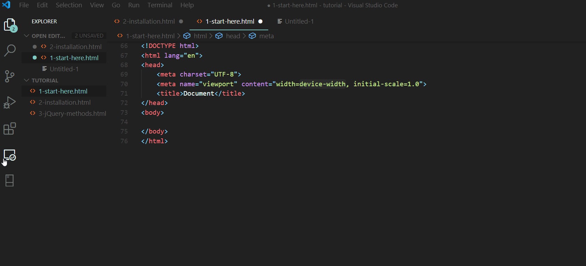

SASS is a supserset of CSS, it's called a CSS with super powers. It allows us to do a lot of things that we normally would not be able to do in CSS like:
And many other which I am gonna cover in this tutorial.
SASS is one of the must have skills for developers to know. I am sure that once you learn SASS, you're gonna have very hard time writing normal CSS.
So without further ado, let's get started.
There are few options to install sass, but for today I am gonna show you the easiest one so we won't wast time for installation.
We gonna use Visual Studio Code extension called Live Sass Compiler
In order to start using SASS all we have to do is to create a file with .scss extension: i.e. styles.scss
So let's create an starting index.html file as well as styles.scss files in our project folder and some style to it i.e.:
Note: This is a website which we previously crated using CSS only during our HTML&CSS Crash Course
index.html :
<!DOCTYPE html>
<html>
<head>
<title>My Website</title>
<link type="text/css" rel="stylesheet" href="styles.css" />
</head>
<body>
<div class="heading">
<h1 class="title">MDB Coding</h1>
<p class="subtitle">For those who love coding</p>
<a href="project.html">
<button class="register">JOIN NOW</button>
</a>
</div>
</body>
</html>
styles.scss :
p {
color: blue;
}
Now when you click on "Watch Sass" icon, it will compile our styles.scss to styles.css file. It will also create a style.css.map file which we will ignore for now.
As you can already see, a valid CSS code is also valid SCSS therefore if you are familiar with CSS you should find using SASS very easy.
There are two syntax available while using SASS:
In this tutorial we will be using SCSS syntax as it is more familiar with CSS.
Since we know theory let's put or hands on keyboard and create learn about variables.